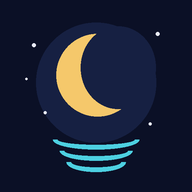

What We Do In Darkness · the whole sleep channel, one tap away
📱 Get the Android appOne tap puts Sleep Sounds right on your home screen, like any other app. Then it is always there when it is time for sleep.
Sound keeps playing
Tap anywhere to bring the picture back